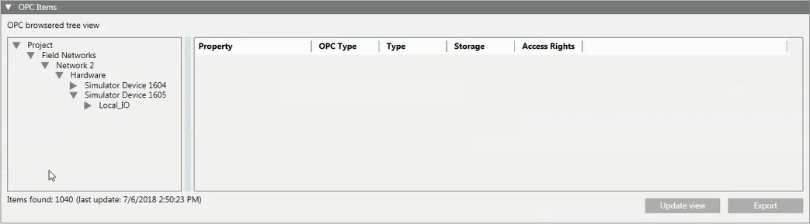

Additional OPC DA Server Procedures
This section provides additional procedures for Desigo CC OPC DA server connectivity-related tasks.
Checking the OPC Library
To be able to configure Desigo CC for OPC DA server connectivity, the project must include the OPC library with the OPC DA server object model. You must check the library version installed on your system. OPC DA Server Library.
- System Manager is in Engineering mode.
- In System Browser, select Management View.
- Select Project > System Settings > Libraries > L1-Headquarter > Global > OPC.
- Check the object model configured in the OPC library: select OPC > Object Models > OPC Server DA.

If the OPC library is missing or if the version is not the one you expect according to the latest technical information, contact the System Librarian.
Retrieving the OPC DA Server Configuration Data
- You configured the OPC DA server. See Configuring OPC DA Server Connectivity.
- System Manager is in Engineering mode.
- System Browser is in Management View.
- Select Project > Management System > Servers > Main Server > OPC Server DA.
- The OPC DA Server tab displays.
- Open the OPC Items expander.
- The current configuration (the last loaded) of the Desigo CC OPC DA server displays on the right of the OPC-filtered tree view.
- Click Update view.
- The system starts retrieving the OPC configuration data from the OPC scope. The Export button is inactive. The System Manager status bar displays the in progress operation (
Loading data...). When the operation completes, the OPC-filtered tree view on the left shows the Desigo CC OPC DA server configuration, while the System Manager status bar displays:Loading OPC items completed.
NOTE: If the operation takes too long, you may want to stop loading the configuration; you do this by clicking Abort. In this case, skip the last step. If the update view operation fails, or you cancel the operation, the latest valid configuration is loaded.
If during the update view operation you change the node selection in System Browser, a message tells you:The loading data procedure is in progress; do you want to cancel it?Do one of the following:
- Click Yes to abort the operation and skip the last step.
- Click No to change the selection in System Browser while the update view operation runs in background (information displays in the in progress bar).
- Click Cancel to abort the node selection and continue with the update view operation. - Expand the OPC-filtered tree view on the left to reach any OPC group.
- Select an OPC item under it.
- The grid on the left of the OPC-filtered tree view refreshes to display the properties for the selected OPC item. These are the properties that will be exposed as OPC items to any connected third-party OPC clients.
While the Desigo CC OPC DA server is running, if you notice inconsistencies between the number of Items Found displayed at the bottom of the OPC DA Server tab and the Server Items Number displayed in the Operation tab, click Update view to refresh the data and retrieve the latest project configuration (see OPC Items Data Alignment).

Exporting OPC DA Server Configuration Data
- System Manager is in Engineering mode.
- System Browser is in Management View.
- The OPC DA server is selected in System Browser and the OPC DA Server tab displays.
- In the Operation tab, OPC Server DA Status =
Running. See OPC DA Server Commands.
- (Optional) In the OPC Items expander, click Update view to refresh the Desigo CC OPC DA server configuration data.
NOTE: This Export button is inactive during the update view operation. The configuration exported will always correspond to the data displayed in the OPC Items expander (last loaded configuration). If you have doubts on the latest configuration, this operation may be necessary to be sure to have aligned data (see OPC Items Data Alignment). - Click Export.
- In the OPC Export dialog box that displays, do the following:
a. In the Save in drop-down list, select the directory where you want to store the export file.
b. Enter the file name.
c. Click Save.
- The configuration data of the Desigo CC OPC DA server displayed in the OPC Items expander is exported to a CSV-format file and stored in the selected directory.
When you export the configuration, only the data currently displayed in the OPC Items expander is exported. If the configuration has changed, in order to be sure to export the latest consistent configuration, you must first update the view to retrieve the latest project data, and then re-export the configuration data.
Related Topics
Stopping the OPC DA Server
- System Manager is in Engineering mode.
- System Browser is in Management View.
- The OPC DA Server node is selected in System Browser.
- In the Operation tab, the OPC Server DA Status (
Running)displays. See OPC DA Server Commands. - The number of Items found in the OPC Items expander does not correspond to Server Items Number in the Operation tab. This means that project data and OPC DA server data is not aligned. You need to stop the OPC DA server to have data aligned when it restarts as soon as any third-party OPC clients connect (see OPC Items Data Alignment).
- In the Operation tab, click Stop.
- The OPC DA server stops. The OPC Server DA Status becomes
Not Running.